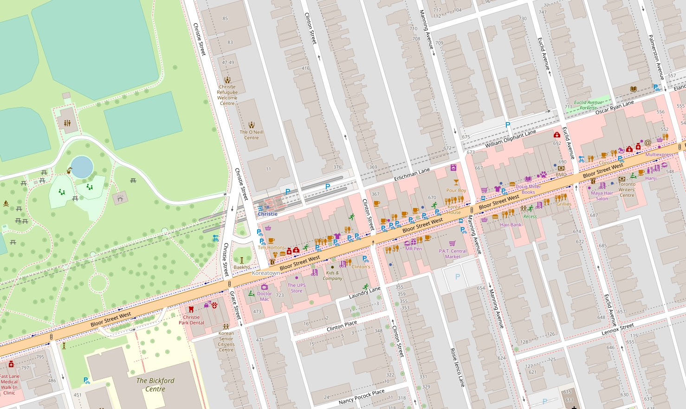
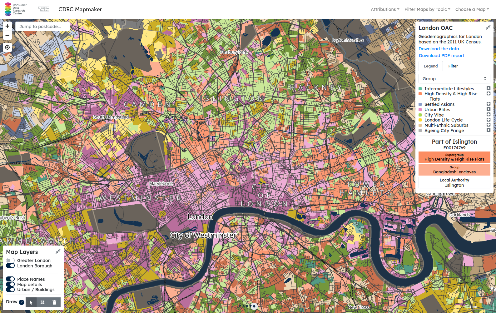
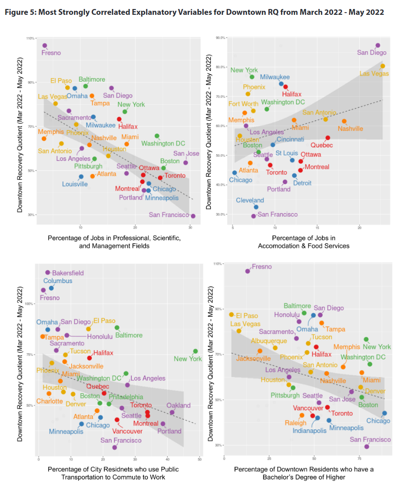

Introduction to Spatial Analysis
using data to analyze the how and why of where


Jeff Allen --- January 16, 2023 --- for MUI2000
Spatial Data
attribute data (the what) + location data (the where)

Vector Data
Representing features as points, lines, or polygons
Vector data is encoded as a series of X,Y (e.g. longitude, latitude) coordinates

Source: Structure of GeoJSON data, a common open-source spatial data format.
Vector data of various built environment features along Bloor Street from OpenStreetMap
e.g. GPS Data
- plethora of points, each with a date/time
- can aggregate to "trips" and "visits"
e.g. aggregated flow data
Raster Data
Represents space as a continuous grid, with each cell having a value

DEM of Toronto and Lake Ontario (Data from NOAA)
e.g. Satellite Imagery

Data Licenses & Use Agreements
Open Data
- e.g. City of Toronto Open Data
- e.g. Canadian Census
Restricted Data
- e.g. Historical Business Data (Data Axle)
- e.g. Environics Analytics Data
Canadian Census (Statistics Canada)
- many variables on demographics, socio-economic status, etc.
- summary data at different levels of geography
- check out CensusMapper to view and download data

Open Data Toronto

Data Axle
Historic Business Data (annually 2009 to 2021)

Geoprocessing
- Converting from one data format to another
- Combining two or more datasets to create new data, based on their spatial location

Geocoding
- Taking an address string a finding its XY coordinates to plot on a map
- From "55 St. George Street, Toronto, ON M5S 0C9" to
[-79.3966, 43.6607] - Can be scaled for 1000s of addresses (e.g. below are Data Axle business data geocoded)

Buffers
- Generates polygons around input features to a specified distance.
- e.g. 1km buffers around public libraries in Toronto
Spatial Joins
- Joining data between layers based on their spatial location
- e.g. counting the number of CafeTO segments by BIA
Spatial Analysis // Urban Data Science
Techniques for understanding the how and why of where
- Visualization (describing patterns with maps, graphs, etc.)
- Descriptive Statistics (summarizing data, can be spatial or non-spatial)
- Clustering (grouping of similar objects into sets)
- Classification (identifying which category an object belongs to)
- Modelling (understanding relationships between variables / predicting outcomes)
e.g. Neighbourhood clustering / geodemographics in Great Britain
e.g. what's correlated with downtown recovery?
Other Tools | Zoetrope
- https://zoetrope.pythonanywhere.com
- A tool to facilitate the collection, analysis, and processing of Google Street View images across time and geographies
- Feel free to join a demo on January 19 at 11 AM ET to learn about the tool from creators Shayan Ghosh and Moulay-Zaidane Draidia.
Other Tools | Streetmix
Tool for designing street sections